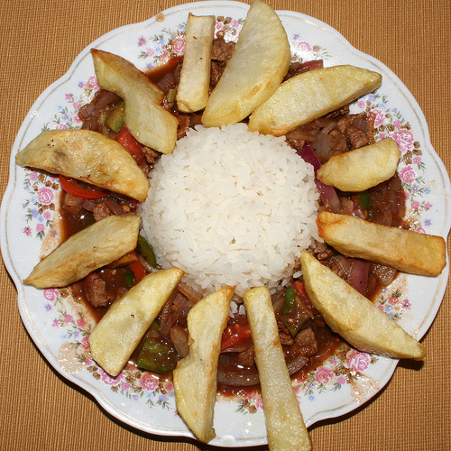

Stir-fried beef (Lomo saltado) recipe

Description
Lomo Saltado is a classic Peruvian stir-fry that combines Peruvian and Chinese flavors. This beloved dish is traditionally made with sliced beef, onions, tomatoes, and Peruvian yellow chili peppers, all stir-fried together with soy sauce and vinegar, and served over french fries and rice. As an experienced Peruvian chef, I will guide you through the steps to make a perfect Lomo Saltado that is bursting with flavor and sure to impress your friends and family, by sharing tips and tricks to help you create an authentic Peruvian Lomo Saltado in the comfort of your own kitchen.
Ingredients
- 1/2 kilo sirloin steak cut in thin slices
- Salt and pepper
- 3 tablespoons vegetable oil
- 2 garlic cloves finely diced
- 1 red onion cut in thick slices
- 2 tomatoes cut in thick slices
- 1 seeded and ribbed aji amarillo chili pepper cut in thin slices (or 1 tablespoon of paste)
- 3 tablespoons soy sauce
- 3 tablespoons red wine vinegar
- 1/2 cup fresh cilantro, chopped
- 2 cups French fries
- White rice as a side dish
Steps
- Season the sirloin steak with salt and pepper.
- Put a wok or a pan over very high heat. Add the oil and saute the meat, a few slices at a time so they don't steam but remain golden instead (about 10 minutes, depending on how strong the flame is)
- Add the garlic, onion, tomato, chili pepper, and stir for a couple of minutes.
- Add the soy sauce and vinegar in the sides of the pan and mix everything. Season with more salt and pepper.
- Take off the heat, add chopped cilantro and serve at once with French fries and white rice.
The contents of this recipe are heavily inspired by the Lomo Saltado, Chinese Inspired Feast for the Senses recipe, on the Peru Delighs website.
Back